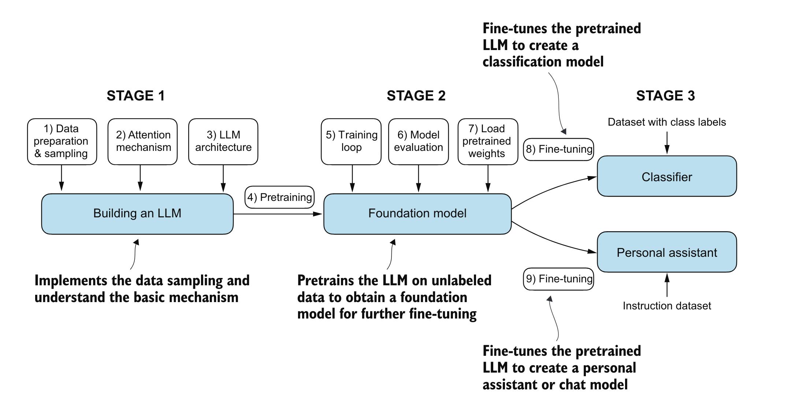

Introduction:
In this series on notebooks I will share my learning/note-taking of the book Build a Large Lunguage Model(From Scratch) by the Author Sebastian Raschka.
Structure of the Book:
├── chapters
│ ├── chapter1_understanding_LLMs: high-level introduction to the fundamental concepts behind LLMs.
│ ├── chapter2_text_data: It covers the process ofpreparing text for LLM training, including splitting text into word and subword tokens.
│ ├── chapter3_attention_mechanisms: It introduces a basicself-attention framework and progresses to an enhanced self-attention mechanism.
│ ├── chapter4_GPT_model: focuses on coding a GPT-like LLM that can be trained to generatehuman-like text.
│ ├── chapter5_pretraining: implements the pretraining process of LLMs.
│ ├── chapter6_text_classification: introduces different LLM fine-tuning approaches.
│ ├── chapter7_instruction_following: explores the instruction fine-tuning process of LLMs.
└── The aim of this chapter is to introduce the foundational concepts of large language models (LLMs) and the advancements in deep learning that made them possible
- this chapter doesn’t contain any code.
Large language models (LLMs), like OpenAI’s ChatGPT, are deep neural networks that revolutionized natural language processing (NLP) in recent years.
Traditional NLP methods excelled in tasks like spam classification and simple pattern recognition but struggled with complex tasks requiring advanced understanding and generation abilities.
Contemporary LLMs can handle sophisticated language tasks, such as writing an email from keywords, which was challenging for earlier models.
When we say language models “understand,” we mean they can produce text that seems coherent and contextually appropriate, not that they have human-like awareness or true comprehension.
The transformer architecture and large datasets have driven the shift in NLP, enabling more advanced language understanding and interaction.
What’s an LLM:
- LLM’s are neural network designed to understand and produce huma-like text.
- Large in LLM refer to the size of the datasets those model trained on, but also on the size of parameters ( 100’s of billions)
- Parameters are adjusted weights during training to predict next word in sentence.
- The architecture of an LLM is called
transformerswhich apply theattention mechanismto different parts of the input while performing the next word prediction. ### Applications of LLM’s: - LLM’s can be used in many contexts to perform different tasks:
- machine translation
- sentiments analysis
- text generation
..
Stages of building and using LLMs:
- Building LLM form scratch allow us to understand the mechanics and limitations of language models, and provide us with skills set required for pretraining or fine-tuning phase.
- Custom-built LLM outperform general purpose one.
- Many companies prefer to build their own domain-specific llm to keep their private data in-home and not share it with third party.
- developing small lm open the door for deployment on devices like laptops or even mobiles rather than huge servers.
- creating LLM is a process where pre-training and fine-tuning takes place.
preindicates that it is the first phase, model is trained on huge chunk of data where it learns basic knowledge and broad pattern of the language.- the
fine-tuningphase is where the model get further training but on very specific task and get its knowledge narrowed.
- Fine-tuning can be devised in 2 category:
- Instruction fine-tuning: where the model get trained one pair of instruction => output dataset.
- Where classification tuning the data consist of text and associated class label.
Introducing the Transformer architecture:
All modern LLM rely on Transformer architecture which was presented for the first time in this famous paper: Attention is all you need.
Transformer consist of two submodal: 1-encoder and 2-decoder. - encoder module process the input text into some numerical representation that capture meaning.
- decoder uses the numerical values and generate text
the key component of the transformer architecture is attention mechanism, we will talk about it later.
Transformer Variants:
- Models like BERT and GPT are based on the original transformer architecture but adapt it for different tasks.
- BERT’s Training Strategy: BERT uses a masked word prediction approach, where it predicts missing words in a sentence, making it suitable for tasks like text classification and sentiment analysis.
- GPT vs. BERT: GPT is designed for generative tasks, whereas BERT excels in tasks requiring understanding of context, like sentiment prediction and document categorization.
- BERT’s Real-world Application: Platforms like X (formerly Twitter) use BERT for tasks such as detecting toxic content.GPT Focus: GPT utilizes the Decoder portion of the transformer architecture and is designed for text generation tasks.
Zero-shot and Few-shot Learning: GPT models excel in zero-shot learning, meaning they can handle tasks without specific prior examples. They also perform well in few-shot learning, where they learn from a small number of provided examples.
Versatility: While GPT models are optimized for text completion, they exhibit broad adaptability and can tackle a wide range of tasks, showcasing their flexibility in natural language processing.
Utilizing large datasets:
Diverse Training Data: Large datasets used for training GPT- and BERT-like models contain billions of words, covering a broad range of topics and languages (both natural and programming).
Comprehensive Corpus: These datasets are designed to ensure comprehensive exposure to diverse linguistic and contextual patterns.
A closer look at the GPT architecture:
GPT Origin: GPT was introduced in the paper Improving Language Understanding by Generative Pre-Training by Radford et al. from OpenAI.
GPT-3: A scaled-up version of the original GPT with more parameters and a larger training dataset.
ChatGPT’s Base Model: The initial ChatGPT model was derived by fine-tuning GPT-3 on a large instruction dataset, using methods from OpenAI’s InstructGPT paper.
Model Versatility: Despite being trained on a simple next-word prediction task, GPT models excel in various tasks like text completion, spelling correction, classification, and language translation.
Self-Supervised Learning: The next-word prediction task is a type of self-supervised learning, where the model uses the structure of the data itself for training.
Label Creation: Labels are generated dynamically, with the next word in a sentence or document serving as the prediction target.
Training on Massive Datasets: This approach enables the use of large, unlabeled text datasets for training, as explicit labeling of data is unnecessary.
Building a large language model:
- Now we understand the basic theory behind LLM and how they were introduced, its time to build them from scratch.
 >Source: Book: Build A Large Language Model by Sebastian Raschka